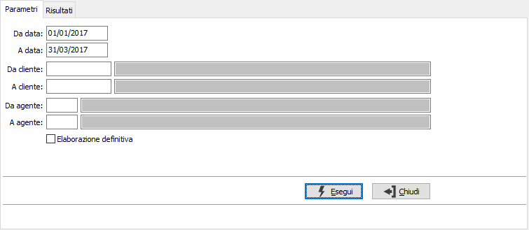
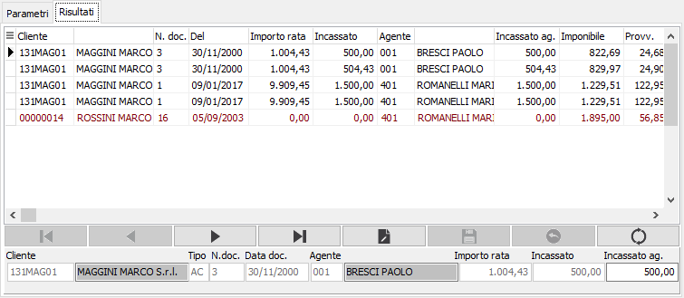

Registrazione incassi
La procedura di registrazione incassi ricerca all'interno della tabella scadenze i movimenti relativi ad incassi e pagamenti e genera i rispettivi movimenti sulle provvigioni. In base a quanto specificato in configurazione provvigioni è possibile effettuare la registrazione a saldo della singola rata oppure a saldo dell'intera partita.
La procedura si sviluppa su due pagine, nella prima sono presenti i parametri di selezione.

DA DATA: indica la data di registrazione, relativa ai movimenti contabili, da cui iniziare l'elaborazione. Il campo è obbligatorio.
A DATA: indica la data di registrazione, relativa ai movimenti contabili, con cui terminare l'elaborazione. Il campo è obbligatorio.
DA CLIENTE: codice del cliente, presente in anagrafica, da cui si vuole iniziare l'elaborazione. Confermando a vuoto, l'elaborazione inizia dal primo codice valido. Sul campo sono attive le funzioni di ricerca (F9).
A CLIENTE: codice del cliente, presente in anagrafica, con cui si vuole terminare l'elaborazione. Confermando a vuoto, l'elaborazione termina con l'ultimo codice valido. Sul campo sono attive le funzioni di ricerca (F9).
DA AGENTE: codice dell'agente, da cui si vuole iniziare l'elaborazione. Confermando a vuoto, l'elaborazione inizia dal primo codice valido. Sul campo sono attive le funzioni di ricerca (F9).
A AGENTE: codice dell'agente, con cui si vuole terminare l'elaborazione. Confermando a vuoto, l'elaborazione termina con l'ultimo codice valido. Sul campo sono attive le funzioni di ricerca (F9).
ELABORAZIONE DEFINITIVA: definisce se effettuare un'elaborazione di prova (casella vuota), oppure definitiva (casella con segno di spunta). L'elaborazione definitiva effettua la scrittura dei movimenti sui movimenti delle provvigioni.
La pressione del pulsante Esegui porta il risultato dell'elaborazione nella pagina Risultati; nella pagina sono elencati i documenti per cui saranno generati gli incassi. Nel caso fosse attiva la gestione degli agenti di rigo compare in basso a destra un campo contenente l'importo incassato modificabile dall'utente. Nel caso di incasso derivante da compensazione la riga viene visualizzata di colore blu e l’operatore può decidere se riconoscere o meno le provvigioni su tale movimento (per non riconoscere le provvigioni è sufficiente deselezionare la riga con il doppio click sulla griglia).
Sono attivi i tasti Anteprima e Stampa sulla toolbar principale per effettuare la stampa del report.
La pressione del tasto Salva sulla toolbar principale, in caso di elaborazione definitiva, previa richiesta di conferma, effettua la registrazione definitiva.
